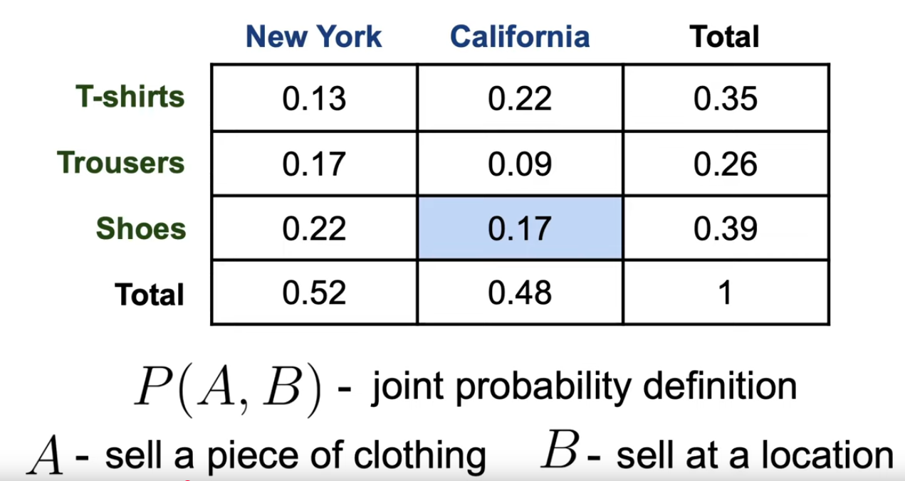
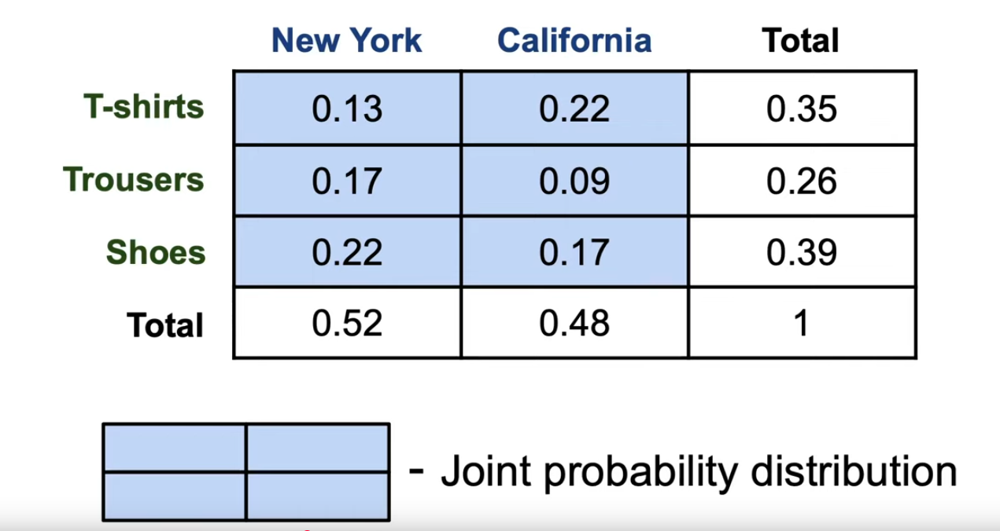
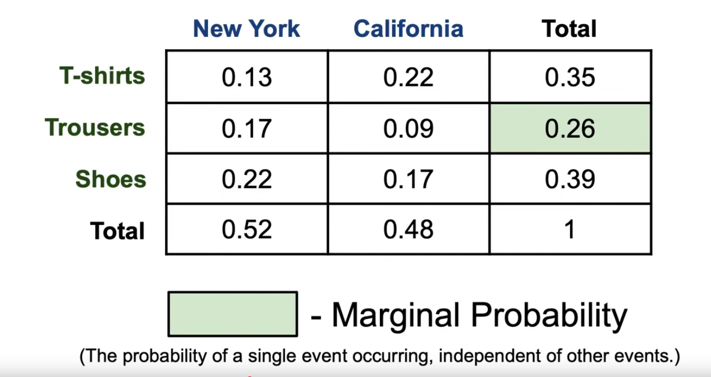
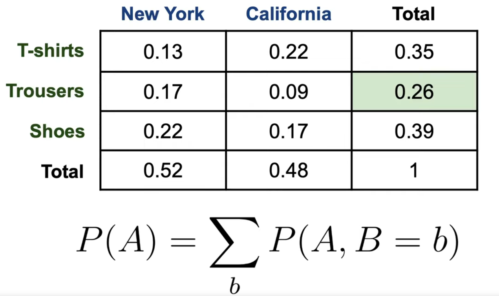
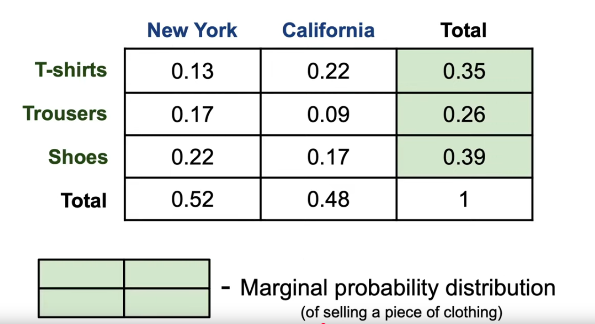
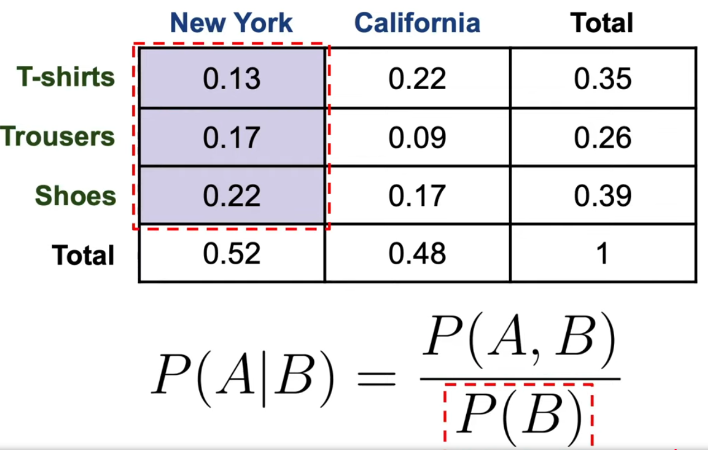
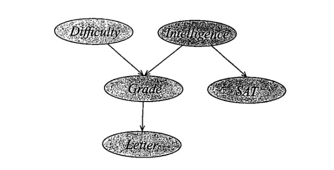
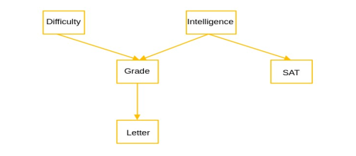
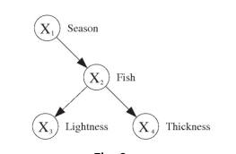

Probability
Table of Contents
- 1. Basics of Probability
- 1.1. First Order Logic
- 1.2. Basic Probability
- 1.2.1. Eight horses are entered in a race. You randomly predict a particular for the horses to complete the race. What is the probability that your prediction is correct?
- 1.2.2. A bag contains 6 white and 4 red balls. Three balls are drawn one by one with replacement. What is the probability that all 3 balls are red?
- 1.2.3. An urn contains 9 blue, 7 white and 4 black balls. If 2 balls are drawn at random, then what is the probability that only one ball is white?
- 1.2.4. A and B play a game where each is asked to select a number from 1 to 5. If the two numbers match, both of them win a prize. What is the probability that they will not win a prize in a single trial?
- 1.2.5. A can solve 80% of the problems given in an exam, and B can solve 70%. What is the probability that at least one of them will solve a problem at random from the exam?
- 1.2.6. An anti aircrafft gun can fire 4 shots at a time. If the probabilities of the 1st, 2nd, 3rd and the last shot hitting the enemy aircract are 0.7, 0.6, 0.5, 0.4, what is the probability that 4 shots aimed at an enemy aircraft will bring the aircraft down?
- 1.2.7. There are two bags - one containing 3 one rupee coins, 6 five rupee coins, and the other containing 7 five rupee contains and 2 one rupee coings. One bag is chosen at random and from that one rupee coin is drawn at random. What is the probability that it’s a one rupee coin?
- 1.3. Frequentest Approach to find Probability
- 1.4. Joint Probability
- 1.5. Marginal Probability
- 1.6. Conditional Probability
- 1.7. Chain Rule
- 1.8. Bayes Theorem
- 1.8.1. Why do we need Bayes Theorem
- 1.8.2. Suppose that a tuberculosis (TB) skin test is 95 percent accurate. That is, if the patient is TB-infected, then the test will be positive with probability 0.95, and if the patient is not infected, then the test will be negative with probability 0.95. Suppose that 1 in 1000 of the subjects who get tested is infected. What is the probability of getting a positive test result?
- 1.8.3. Same Question But Expanded
- 1.9. Independent Random Variables
- 1.10. Chain Rule
- 2. Graphs to Model Probability
- 3. Bayesian Network
- 3.1. General Naive Bayes Model
- 3.2. What a Bayesian Network is
- 3.3. D-Seperation
- 3.4. Let G be a Bayesian network structure over a set of random variables X as shown in Fig. 3, and let P be the joint distribution over the same space. If P factorises according to the graph G, then show that P(S|I,D,G,L) = P(S|I)
- 3.5. Question
- 3.6. Question
- 3.7. Consider a person standing at position 0 on the number line. The person tosses a coin, which can land heads with probability p and tails with probability 1-p. At each second, he tosses the coin. If it lands heads, he takes one step forward. If it lands tails, he moves one step backward. Compute, without using Markov chain libraries, the probability that the person will be at
- 3.8. Common Causes of Error in Bayesian Networks
1. Basics of Probability
1.1. First Order Logic
1.1.1. Affirming the Consequent
If P then Qis given asP→QThe below truth table is for the statement “If P is true, then Q is definitely true”.
P Q P → Q 0 0 1 0 1 1 1 0 0 1 1 1 - From the truth table, you can tell that if
Qwas false, then for surePis definitely false. This is because ifQwas false, thenP→Qis true only whenPis false too. - But if
Qwas true, you can’t guarantee thatPwas true too. Even ifPwas false,P→Qwould be true. CallingPtrue just becauseQis true, is called affirming the consequent. For example:
If it’s raining, the ground is wet.
- If the ground is dry, it hasn’t rained for sure.
- But if the ground is wet, you can’t tell if it was raining or not.
1.1.2. Standard Laws
- Implication Elimination: a → b is the same as ~a ∨ b
- Demorgan’s law: ~(a ∨ b) = ~a ∧ ~b
1.2. Basic Probability
1.2.1. Eight horses are entered in a race. You randomly predict a particular for the horses to complete the race. What is the probability that your prediction is correct?
- \(\frac{1}{8!} \)
1.2.2. A bag contains 6 white and 4 red balls. Three balls are drawn one by one with replacement. What is the probability that all 3 balls are red?
\(P(red) = \frac{4}{10} \times \frac{4}{10} \times \frac{4}{10}\)
1.2.3. An urn contains 9 blue, 7 white and 4 black balls. If 2 balls are drawn at random, then what is the probability that only one ball is white?
- \(\text{Probability that only one is white} = \frac{\text{(Number of ways to pick a white ball)} \times \text{(Number of ways to pick non-white ball)}}{\text{Total number of ways to pick 2 balls}}\)
- \(\text{Probability that only one is white} = \frac{{}^{7}C_{1} \times {}^{13}C_{1}}{{}^{20}C_{2}}\)
1.2.4. A and B play a game where each is asked to select a number from 1 to 5. If the two numbers match, both of them win a prize. What is the probability that they will not win a prize in a single trial?
Here are the events where they actually do get the same number
(1,1) (1,2) (1,3) (1,4) (1,5) (2,1) (2,2) (2,3) (2,4) (2,5) (3,1) (3,2) (3,3) (3,4) (3,5) (4,1) (4,2) (4,3) (4,4) (4,5) (5,1) (5,2) (5,3) (5,4) (5,5) The probability for this is \(\frac{5}{25} = \frac{1}{5}\)
- Hence, the probability of not being the same number is \(\frac{1}{5}\).
1.2.5. A can solve 80% of the problems given in an exam, and B can solve 70%. What is the probability that at least one of them will solve a problem at random from the exam?
| \(\bar{A}\) | \(\bar{B}\) | → Except this, we need everything else |
| \(\bar{A}\) | \(B\) | |
| \(A\) | \(\bar{B}\) | |
| \(A\) | \(B\) |
- \(\text{P(At least one of them solves)} = 1 - \bar{A} \times \bar{B}\)
- \(\text{P(At least one of them solves)} = 1 - (0.2 \times 0.3)\)
- \(\text{P(At least one of them solves)} = 0.94 \)
1.2.6. An anti aircrafft gun can fire 4 shots at a time. If the probabilities of the 1st, 2nd, 3rd and the last shot hitting the enemy aircract are 0.7, 0.6, 0.5, 0.4, what is the probability that 4 shots aimed at an enemy aircraft will bring the aircraft down?
| a | b | c | d |
|---|---|---|---|
| 0.7 | 0.6 | 0.5 | 0.4 |
- \(P(\text{no shot}) = \bar{A} \times \bar{B} \times \bar{C} \times \bar{D}\)
| \(\bar{A}\) | \(\bar{B}\) | \(\bar{C}\) | \(\bar{D}\) | → Except this, we need everything else |
| \(\bar{A}\) | \(\bar{B}\) | \(\bar{C}\) | \(D\) | |
| \(\bar{A}\) | \(\bar{B}\) | \(C\) | \(\bar{D}\) | |
| \(\bar{A}\) | \(\bar{B}\) | \(C\) | \(D\) | |
| \(\bar{A}\) | \(B\) | \(\bar{C}\) | \(\bar{D}\) | |
| \(\bar{A}\) | \(B\) | \(\bar{C}\) | \(D\) | |
| .. | .. | .. | .. | |
| \(A\) | \(B\) | \(C\) | \(D\) |
- \(\text{P(At Least one shot)} = 1 - \text{P(No Shot)}\)
- \(\text{P(At Least one shot)} = 1 - (0.3) \times (0.4) \times (0.5) \times (0.6)\)
- \(\text{P(At Least one shot)} = 0.964\)
1.2.7. There are two bags - one containing 3 one rupee coins, 6 five rupee coins, and the other containing 7 five rupee contains and 2 one rupee coings. One bag is chosen at random and from that one rupee coin is drawn at random. What is the probability that it’s a one rupee coin?
| Bag 1 | Bag 2 |
|---|---|
| \(3 \times\) 1 rupee | \(2 \times\) 1 rupee |
| \(6 \times\) 5 rupee | \(7 \times\) 5 rupee |
- \(\text{Probability of drawing 1 rupee from bag 1} = \frac{1}{2} \times \frac{3}{9} = \frac{1}{6} \)
- \(\text{Probability of drawing 1 rupee from bag 2} = \frac{1}{2} \times \frac{2}{9} = \frac{1}{9} \)
- \(\text{Total Probability} = \frac{1}{6} + \frac{1}{9} = \frac{5}{18} \)
1.3. Frequentest Approach to find Probability
- Essentially, you conduct a large number of experiments and you calculate the probability using the frequency of the events.
- Theoretically, when you conduct an infinite number of experiments, the probabilities of the events calculated will be accurate.
1.4. Joint Probability
- Joint probability is the probability of two events happening together.
- For example, joint probability would be the probability of selling a T-shirt in New York.


1.5. Marginal Probability

- It’s the probability of one event happening regardless of the other event.

- You simply sum up all the probabilities of this one event occuring.

For example Let’s say:
- A=Weather, values = {Sunny, Rainy}.
- B=GrassWet, values = {Yes, No}.
Suppose:
- P(A=Sunny)=0.7,
- P(A=Rainy)=0.3.
- P(B=Yes|A=Sunny)=0.1
- P(B=Yes|A=Rainy)=0.9
To find P(B=Yes):
- P(Yes, Sunny) = P(Yes|Sunny)*P(Sunny) = 0.1*0.7 = 0.07
- P(Yes, Rainy) = P(Yes|Rainy)*P(Rainy) = 0.9*0.3 = 0.27
| Sunny | Rainy | ||
| Yes | 0.07 | 0.27 | P(Yes) = 0.34 |
| No | - | - |
1.6. Conditional Probability
- Joint probability would be “what’s the probability of selling a T-shirt in New York”.
A conditional probability would be “what’s the probability of selling a T-shirt, knowing that the user is from New York”. Consider the below example where \(P(A,B)\) is the probabilty of getting a T-shirt from New York. \(P(B)\) would be the probability of the location being New York.

- In a way, joint probability is \(\frac{P(A,B)}{1}\), because the grand sum of all probabilties is 1. In conditional probability, the total sample space is just \(P(B)\).
- Now, since \(P(A|B) = \frac{P(A,B)}{P(B)}\):
\[P(A,B) = P(B) \times P(A | B)\]
- The probability of finding one cell among the entire matrix is joint probability.
- The probability of finding one cell among a column of cells is conditional probability.
- The sum of probabilities of finding each cell of a column, from the entire matrix is called marginal probability. So in a way, it’s the probability of finding that column from the entire matrix.
- So the probability of finding one cell among the entire matrix (joint), can be found be first finding that column from the entire matrix (marginal), and then finding that cell from that column (conditional)
1.7. Chain Rule
\[P(A, B, C, D) = P(A) \times P(B|A) \times P(C|A,B) \times P(D|A,B,C)\]
- The sample space is not just the column \(B\), but it’s columns \(B\), \(C\) and \(D\).
- So we find the column from the matrix and the cell from the column \(A\).
- Then we find \(C\) from both columns \(A\) and \(B\).
- Then we find \(D\) from columns \(A\), \(B\) and \(C\).
1.8. Bayes Theorem
- This is used to find joint probability of two events X and Y \[ P(X|Y) = \frac{P(Y|X)*P(X)}{P(Y)} \]
1.8.1. Why do we need Bayes Theorem
- For example:
- 1% of people have Disease X
- The test is 90% accurate
- Given that you test POSITIVE. What’s the chance you actually have the disease? Intuition might say 90%, but that’s WRONG!
- Imagine 10,000 people:
- 1% have disease = 100 people have it
- 99% healthy = 9,900 people healthy
Confusion Matrix:
Sick Healthy Test Negative \(100*\frac{10}{100} = 10\) \(9900*\frac{10}{100} = 990\) Test Positive \(100*\frac{90}{100} = 90\) \(9900*\frac{90}{100} = 8910\) - The cases where the test actually worked, is when the person was sick and the test was positive, or the person was healty and the test was negative: \[= 90 + 990 = 1,080\]
- Out of the 1080 cases where the test actually worked, only 90 actually have disease!
- Real probability = 90/1,080 = 8.3%
1.8.2. Suppose that a tuberculosis (TB) skin test is 95 percent accurate. That is, if the patient is TB-infected, then the test will be positive with probability 0.95, and if the patient is not infected, then the test will be negative with probability 0.95. Suppose that 1 in 1000 of the subjects who get tested is infected. What is the probability of getting a positive test result?
- Given:
- P(Positive | Infected) = 0.95
- P(Negative | Uninfected) = 0.95
- P(Infected) = 0.001
- P(Positive, Infected) = P(Positive | Infected) * P(Infected) = 0.95 * 0.001
- P(Positive, Uninfected) = P(Positive | Uninfected) * P(Uninfected) = 0.05 * 0.999
- P(Positive) = P(Positive, Infected) + P(Positive, Uninfected) = 0.0509
1.8.3. Same Question But Expanded
- P[A|C] = 0.95 (If you have cancer, probability test says positive = 95%)
- P[Ac|Cc] = 0.95 (If you don’t have cancer, probability test says negative = 95%)
- P[C] = 0.005 (Overall probability of having cancer = 0.5%)
- Find P[C|A] = Probability you have cancer given the test is positive
- \(P[C|A] = P[A|C] * \frac{P[C]}{P[A]}\)
- \(P[C|A] = 0.95 * \frac{0.005}{P[A,C] + P[A,C^{c}]}\)
- \(P[C|A] = 0.95 * \frac{0.005}{P[A|C]*P[C] + P[A|C^{c}]*P[C^{c}]}\)
- \(P[C|A] = 0.95 * \frac{0.005}{0.95*0.005 + 0.05*0.995}^{}\)
- \(P[C|A] = 0.95 * \frac{0.005}{0.0545}^{}\)
- \(P[C|A] = 0.95 * 0.091743119\)
- \(P[C|A] = 0.087155963\)
1.9. Independent Random Variables
- Assume we have two disjoint sets X and Y
- It’s denoted as \(X \perp Y \)
- \(P(X,Y) = P(X|Y)*P(Y)\) (∵ Bayes Theorem)
- When X and Y are independent, then \(P(X|Y)=P(X)\). Hence \[P(X,Y) = P(X)*P(Y)\]
1.10. Chain Rule
\[P(A, B, C, D, ...) = P(A)*P(B|A)*P(C|A,B)*P(D|A,B,C)\] This is always true
2. Graphs to Model Probability
- Here we work with graphs, where nodes are events, and edges tell you if these events are dependent or independent of each other.
- The probability values that a node can take are called attributes.
2.1. Associative Relations
- In a graph, associative relations are represented by undirected edges. This means that two nodes are related, but follow no meaningful relation.
- Eg.
- Node 1: Current Pixel on the screen is black
- Node 2: Neighbouring Pixel is black too
- It’s just a coincidental event.
2.2. Causal Relation
- A directed edge between two nodes, which signifies one event likely to cause the other.
- Eg.
- Node 1: “It’s raining.”
- Node 2: “The ground is wet.”
2.3. Strongly Connected Graphs
- A directed graph where any node can be reached from any other node.
- They’re also called clique.
3. Bayesian Network
3.1. General Naive Bayes Model
- Bayes Theorem on machine learning is:
\[ P(Class | Features) = \frac{P(Features | Class) * P(Class)}{P(Features)} \]
Where all the features are independent
- \(P(Class | Features) \) is called posterior probability (probability of features of a particular class).
- \(P(Class)\) is the prior probability: the probability of the class without any observed features.
- \(P(Features)\) is the marginal likelihood (normalization constant), the total probability of the observed features across all possible classes. (not complete)
3.2. What a Bayesian Network is
- It’s a skeleton data structure that attaches local probability models.
- Bayesian networks are directed acyclic graphs.
- A node is only directly dependent on it’s immediate parent.
- A Bayesian Network is essentially a directed Markov Network (A state is directly dependent on its previous node, and Markov Networks are usually undirected).
- You can infer details of the child from the parents, and you can get rid of the child and it’s subtree from the network. It would still make sense. You can’t do the other way round, where you infer details about the parents from the child and you get rid of the immediate parent.
- Another way of seeing this is that, if you know your parents, you know everything about grandparents. But if you know your grandchildren, you don’t know about your children.
- The arrows in a bayesian network emphasizes conditional independence.
Here’s an example

\[P(I,D,G,S,L) = P(I) × P(D) × P(G|I,D) × P(S|I) × P(L|G)\]
3.3. D-Seperation
3.3.1. Serial Connection
- Say you have a causal chain A → B → C
- If B is unknown, then A has influence on C.
- But if you know the value of B, then the value of A doesn’t affect C.
- If this chain is part of a bigger network, and you know the value of A, the path is blocked.
- Suppose we have A → B → C → D
- If B is known, then A and C + D are independent.
- Formally A ⊥ (C,D) | B
3.3.2. Divergent Connection
- Say you have a network A ← B → C \[P(A,B,C)=P(B)⋅P(A∣B)⋅P(C∣B)\]
- Normally, A and C are dependent, because they have the same cause B.
- But if you know the value of B, then A and C become independent. This is called conditional independence. It’s denoted as \[A \perp C| B\] and this means \[P(A,C|B) = P(A|B) * (C|B) \]
- Just like in a serial connection, if you know the value of B, the path is blocked.
3.3.3. Convergent Connection
- Say you have a network A → B ← C
- If B is unknown, then A and C are independent. This is because A and C are parents (causes) and B is the child.
- If B is known, then A and C becomes dependent. It’s the opposite of a divergent connection.
- For example, consider Talent → Success ← Luck.
- Talent and luck are independent.
- If someone succeeded, then talent and luck become negatively correlated - if they succeeded with low talent, they probably had high luck.
- Here, only if you know the value of B, will this be a path. If the value of B is unknown, this path is blocked. Knowing the value of a random variable is called observing it.
3.4. Let G be a Bayesian network structure over a set of random variables X as shown in Fig. 3, and let P be the joint distribution over the same space. If P factorises according to the graph G, then show that P(S|I,D,G,L) = P(S|I)

- LHS: \(P(S|I,D,G,L)=\frac{P(S, I, D, G, L)}{P(I, D, G, L)}\)
- \(=\frac{P(D)*P(I) * P(G|D,I) * P(S | I) * P(L|G)}{P(D)*P(I) * P(G|D,I) * P(L|G)}\)
- \(=P(S|I)\) = RHS
3.5. Question
- If
- Burglar (B) ⇒ Alarm (A), and Earthquake (E) ⇒ Alarm
- P(A=1 | B=1, E=1) = 1
- P(A=1 | B=0, E=1) = 1
- Then prove P(B=1 | A=1, E=1) = P(B=1)
- Solution
- LHS: P(A=1 | B=1, E=1) = 1
- = \(\frac{P(B=1, A=1, E=1)}{P(A=1, E=1)}\)
- = \(\frac{P(B=1) * P(E=1) * P(A=1 | B=1, E=1)}{P(A=1, E=1)}\) (\(\because\) from the network)
- = \(\frac{P(B=1) * P(E=1)}{P(A=1, E=1)}\) (\(\because\) \(P(A=1 | B=1, E=1)=1\) is given)
- = \(\frac{P(B=1) }{P(A=1 | E=1)}\)
- = \(P(B=1)\) (\(\because\) In the given equations, B doesn’t impact the probability, hence you can remove it)
3.6. Question

Given that Season = {summer, winter} Fish = {salmon, sea bass}, Lightness = {light, dark}, Thickness = {thin, thick}, find P(Fish = salmon | Thickness = thick, Season = winter)
- \(P(Fish = salmon | Thickness = thick, Season = winter)\)
- \(= \frac{P(Fish = salmon, Thickness = thick, Season = winter)}{P(Thickness = thick, Season = winter)}\)
- \(= \frac{P(Fish=Salmon | Season=Winter) * P(Thickness=thick | Fish=salmon) * P(Season = winter) }{P(Thickness = thick, Season = winter)}\)
- \(= \frac{P(Fish=Salmon | Season=Winter) * P(Thickness=thick | Fish=salmon) * P(Season = winter) }{P(Fish=salmon, Thickness=thick, Season=winter) + P(Fish=seabass, Thickness=thick, Season=winter)}\)
And now expand the denominator.
3.7. Consider a person standing at position 0 on the number line. The person tosses a coin, which can land heads with probability p and tails with probability 1-p. At each second, he tosses the coin. If it lands heads, he takes one step forward. If it lands tails, he moves one step backward. Compute, without using Markov chain libraries, the probability that the person will be at
3.7.1. Using Permutations and Combinations
- Let \(x\) be the number of events you get H, and \(y\) be the number of events you get T.
- Position 0 after ten coin tosses
- Given \(x+y=10\) and \(x-y=0\)
- \(2x=10\), \(\therefore x=5 \)
- \(y = 10-x = 10-5\), \(\therefore y=5 \)
- Probability = \( .^{(x+y)}C_{x} * p^{x}(1-p)^{y} \)
- Position 5 after ten coin tosses
- Given \(x+y=10\) and \(x-y=5\)
- \(2x=15\), \(\therefore x=7.5 \)
- Probability = 0 because the number of occurances of head is not an integer.
- Position 10 after twenty coin tosses
- Given \(x+y=20\) and \(x-y=10\)
- \(2x=30\), \(\therefore x=15 \)
- \(y = 20-x = 20-15\), \(\therefore y=5 \)
- Probability = \( {}^{(x+y)}C_{x} * p^{x}(1-p)^{y} \)
- Position -5 after fifteen coin tosse
- Given \(x+y=15\) and \(x-y=-5\)
- \(2x=10\), \(\therefore x=5 \)
- \(y = 15-x = 15-5\), \(\therefore y=10 \)
- Probability = \( {}^{(x+y)}C_{x} * p^{x}(1-p)^{y} \)
3.8. Common Causes of Error in Bayesian Networks
3.8.1. Zero Probabilities
- Probabilities with value zero can break the network
3.8.2. Can’t Represent Both A ⊥ C | B, D and B ⊥ D | A, C
- In a Bayesian Network, independencies are modeled as blocking paths (found when we know values).
- So when you say A ⊥ C | B, D , it means the graph looks like \[A \rightarrow B \rightarrow D \rightarrow C\]
- When you say B ⊥ D | A, C, it means the graph looks like \[B \rightarrow A \rightarrow C \rightarrow D\]
You can’t find one graph that conveys both at the same time. Say you draw a square:
A → B ↓ ↓ D ← C A can either directly go to C, or it can go via B and D. You can show A ⊥ C | B, D, but to show B → A → C → D, you’d have to flip the arrows of A → B, A → C and C ← D.
Markov Networks solve this because the edges are undirected.
A — B | | D — C